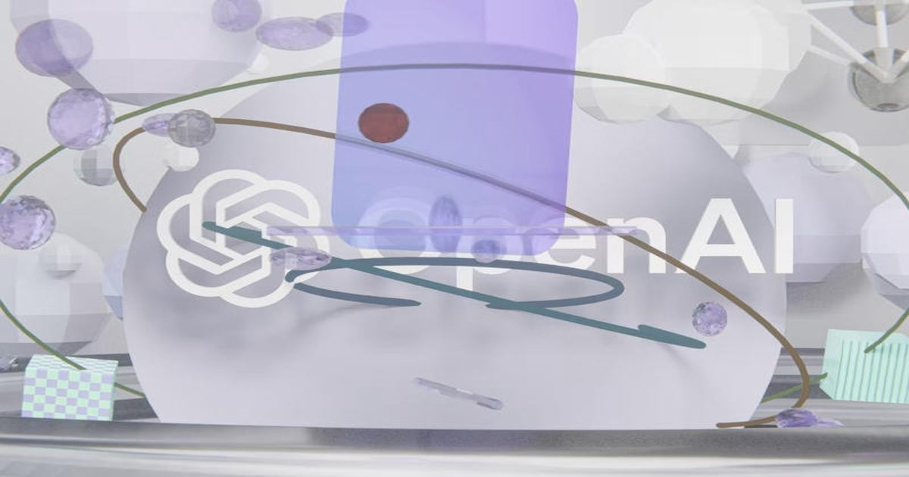

Инвесторы отрезали OpenAI от денег — компания не собрала и половины от $30 млрд, на которые рассчитывала
OpenAI пока заручилась обязательствами инвесторов примерно на $11 млрд — менее половины первоначальной цели в $30 млрд, сообщила The Wall Street Journal со ссылкой на осведомлённые источники.
Сбор средств продолжается, но теперь компания рассчитывает довести общий объём раунда до $20 млрд.
Опасения по поводу перспектив ИИ-бума охладили интерес части крупных инвесторов.
Источник изображения: Brecht Corbeel / unsplash.com